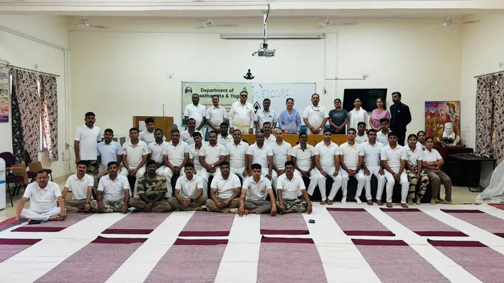

<script type="application/ld+json">
{
  "@context": "https://schema.org",
  "@graph": [
    {
      "@type": "Organization",
      "@id": "https://onlineyogaclass.in/#organization",
      "name": "Shringarika Mishra - Clinical Yoga",
      "url": "https://onlineyogaclass.in",
      "logo": "https://onlineyogaclass.in/images/logo.webp"
    },
    {
      "@type": "Person",
      "@id": "https://onlineyogaclass.in/#shringarika",
      "name": "Shringarika Mishra",
      "jobTitle": "Clinical Yoga Specialist & Research Scholar",
      "image": "https://onlineyogaclass.in/images/shringarika.webp",
      "sameAs": [
        "https://scholar.google.com/citations?user=FAp2CnkAAAAJ",
        "https://www.researchgate.net/profile/Shringarika-Mishra",
        "https://in.linkedin.com/in/shringarika-mishra-400607224"
      ]
    },
    {
      "@type": "BlogPosting",
      "@id": "https://onlineyogaclass.in/blogs/yoga-for-curing-thyroid-clinical-neuro-endocrine-restoration.html#article",
      "isPartOf": {
        "@id": "https://onlineyogaclass.in/blogs/yoga-for-curing-thyroid-clinical-neuro-endocrine-restoration.html"
      },
      "headline": "Yoga for Thyroid Care: Restoring Glandular Balance and Metabolism",
      "description": "Struggling with thyroid fatigue, weight stalls, or chronic brain fog? Discover the clinical science of the thyroid-vagal loop and how somatic yoga optimizes metabolism naturally.",
      "image": "/images/stress.webp",
      "author": {
        "@id": "https://onlineyogaclass.in/#shringarika"
      },
      "publisher": {
        "@id": "https://onlineyogaclass.in/#organization"
      },
      "mainEntityOfPage": "https://onlineyogaclass.in/blogs/yoga-for-curing-thyroid-clinical-neuro-endocrine-restoration.html"
    },
    {
      "@type": "BreadcrumbList",
      "@id": "https://onlineyogaclass.in/blogs/yoga-for-curing-thyroid-clinical-neuro-endocrine-restoration.html#breadcrumb",
      "itemListElement": [
        {
          "@type": "ListItem",
          "position": 1,
          "name": "Home",
          "item": "https://onlineyogaclass.in/"
        },
        {
          "@type": "ListItem",
          "position": 2,
          "name": "Clinical Blogs",
          "item": "https://onlineyogaclass.in/blogs.html"
        },
        {
          "@type": "ListItem",
          "position": 3,
          "name": "Yoga for Thyroid Care",
          "item": "https://onlineyogaclass.in/blogs/yoga-for-curing-thyroid-clinical-neuro-endocrine-restoration.html"
        }
      ]
    }
  ]
}
</script>

<main class="relative z-10 max-w-5xl mx-auto px-4 sm:px-6 lg:px-8 pt-32 pb-24">
    <div class="mb-10 max-w-3xl mx-auto rounded-[2.5rem] overflow-hidden bg-slate-50 border border-pink-50 shadow-md">
        
    </div>

    <div class="article-card bg-white border border-gray-100 rounded-[2.5rem] p-8 md:p-12 shadow-sm transition">
        <script type="application/ld+json">
        {
          "@context": "https://schema.org",
          "@type": "BlogPosting",
          "headline": "Yoga for Thyroid Care: Restoring Glandular Balance and Metabolism",
          "description": "An analytical clinical investigation exploring the thyroid-vagal loop, peripheral T4-to-T3 conversion barriers, superior thyroid artery hemodynamics, and targeted somatic sequences.",
          "keywords": "clinical yoga for thyroid function, hypothyroidism natural solutions, reverse thyroid sluggishness metabolic agni, thyroid vagal loop restoration, clinical yoga Varanasi, Shringarika Mishra research",
          "author": {
            "@type": "Person",
            "name": "Shringarika Mishra"
          },
          "publisher": {
            "@type": "Organization",
            "name": "onlineyogaclass.in",
            "logo": {
              "@type": "ImageObject",
              "url": "https://onlineyogaclass.in/images/logo.webp"
            }
          }
        }
        </script>

        <span class="text-pink-600 font-bold text-xs uppercase tracking-widest">Endocrine Calibration &amp; Metabolic Hemodynamics</span>
        
        <h2 class="text-3xl md:text-4xl font-bold mt-2 mb-6 text-transparent bg-clip-text bg-gradient-to-r from-pink-600 via-purple-600 to-pink-700">Yoga for Thyroid Care: Restoring Glandular Balance and Metabolism</h2>
        
        <div class="flex flex-col md:flex-row gap-8 mb-8">
            <div class="md:w-1/3">
                
            </div>
            <div class="md:w-2/3">
                <p class="text-gray-600 text-lg leading-relaxed">
                    Living with a sluggish metabolism or unexpected weight shifts can make you feel completely detached from your own body. You wake up feeling deeply exhausted despite spending hours in bed, watch your hair thin across the crown while your skin grows dry, and deal with a heavy, stubborn cloud of brain fog that clouds your concentration from morning until night. It is incredibly discouraging to feel as though your energy baseline is slipping away, leaving you entirely dependent on synthetic pill dosages just to get through a basic routine.
                </p>
                <p class="text-gray-600 text-lg leading-relaxed mt-4">
                    In the standard medical system, thyroid imbalances—whether Hypothyroidism or Hyperthyroidism—are almost exclusively treated as a simple, isolated breakdown inside the butterfly-shaped gland in your neck. You are given a daily hormone replacement script to alter your lab numbers, without anyone ever analyzing why your tissues lost their internal timing loops. During my clinical research work at BHU, analyzing thousands of metabolic and endocrine panels has revealed a deeper truth: a thyroid issue is a clear systemic reflection of a disrupted Thyroid-Vagal Loop and chronic HPA-axis activation. Your body is not naturally broken; its master metabolic pathways have simply entered a protective state of freeze.
                </p>
            </div>
        </div>
        
        <div class="full-content text-gray-700 space-y-8 leading-relaxed border-t border-gray-50 pt-8">
            
            <section>
                <h3 class="text-2xl font-bold text-gray-900 mb-3">Deconstructing the Terms: Reserve Balance vs. Glandular Stagnation</h3>
                <p>
                    To approach your metabolic recovery safely, we must clarify the hidden relationships that tie your stress networks directly to your endocrine synthesis pathways. Glandular performance is never a static mechanical value; it responds dynamically to the autonomic nerve signals flowing down from your brain stem.
                </p>
                <table class="w-full border-collapse my-6 text-sm text-left shadow-sm rounded-xl overflow-hidden border border-gray-100">
                    <thead>
                        <tr class="bg-pink-600 text-white font-bold">
                            <th class="p-4">Endocrine Milestone</th>
                            <th class="p-4">What Happens Inside the Cellular Environment</th>
                            <th class="p-4">The Impact on Weight &amp; Core Agni</th>
                        </tr>
                    </thead>
                    <tbody class="divide-y divide-gray-100 bg-white">
                        <tr>
                            <td class="p-4 font-bold text-gray-900">T4 to Active T3 Conversion</td>
                            <td class="p-4 text-gray-600">The inactive thyroxine hormone (T4) must shed an iodine atom in peripheral tissues to become active triiodothyronine (T3).</td>
                            <td class="p-4 text-gray-600">Chronic stress cortisol acts as a block on this conversion, leaving cells completely starved of metabolic fuel.</td>
                        </tr>
                        <tr>
                            <td class="p-4 font-bold text-gray-900">Superior Thyroid Artery Hemodynamics</td>
                            <td class="p-4 text-gray-600">The main capillary channel feeding fresh oxygen, signaling molecules, and antioxidants into the neck tissues.</td>
                            <td class="p-4 text-gray-600">Narrows during a prolonged "Sympathetic Surge," causing stagnant fluid accumulation or Ama within the gland.</td>
                        </tr>
                        <tr class="bg-pink-50/50">
                            <td class="p-4 font-bold text-pink-700">Thyroid-Vagal Loop Activation</td>
                            <td class="p-4 text-pink-900 font-medium">The deep nervous connection that monitors mechanical throat movement and relays rest-and-repair feedback to your brain.</td>
                            <td class="p-4 text-pink-900">Can be manually engaged through specific somatic pressure shifts to naturally rebalance baseline hormone levels.</td>
                        </tr>
                    </tbody>
                </table>
                <p>
                    According to formal clinical directives recorded by the World Health Organization (WHO), metabolic and endocrine conditions are climbing globally due to modern environmental stressors and sedentary work habits. When your daily life involves constant rush, rushing through tasks, and high mental tension, your brain diverts oxygenated blood delivery away from your visceral organs and neck toward your skeletal limbs. This vascular redirection creates a cold state of glandular stagnation, preventing your cells from cleanly processing vital energy pool components, or Ojas. Our Varanasi clinical protocols correct this imbalance through Srotas Shuddhi—the systematic clearing of compressed tissue channels to restore your master metabolic rhythm safely.
                </p>
            </section>

            <section>
                <h3 class="text-2xl font-bold text-gray-900 mb-3">The Science Lesson: Peripheral Conversion Barriers and Glandular Perfusion</h3>
                <p>
                    Let us break down the exact biological mechanism that links your upper spinal alignment to your metabolic burning speed. Your thyroid gland relies entirely on a delicate systemic network to function. It manufactures raw thyroid hormones, but these markers must travel cleanly through your blood vessels and undergo cellular conversion in your peripheral organs before your cells can use them to generate energy.
                </p>
                <p>
                    When your body is trapped in a permanent defensive alert posture—marked by rounded shoulders, a forward head lean, and a chronically tight, compressed throat space—the nerves and arteries traveling through your cervical spine become physically restricted. This localized vascular compression drops your Vascular Perfusion efficiency, allowing metabolic waste debris, or Ama, to collect within your throat tissues. This local stagnation prevents the gland from receiving clear communication signals from your master pituitary tracker.
                </p>
                <div class="my-6 text-center">
                    
                </div>
                <p>
                    Clinical yoga breaks this hypometabolic block by applying targeted structural changes, or Cervical Shunts. By placing the torso into precise configurations that compress and then expand the neck area, we create a powerful squeeze-and-flood effect. When you release these positions, a rich wave of oxygenated blood travels directly into the superior thyroid artery. This movement flushes out systemic waste materials, clears the tissue stagnation blocking hormone conversion, and stimulates your Vagus Nerve pathways. This process down-regulates your alert reflex networks, balances your thyroid-ovarian feedback loop, and helps your cells burn energy cleanly without placing any unnecessary stress on your body.
                </p>
            </section>

            <section class="bg-pink-50 p-8 rounded-3xl border-l-8 border-pink-400">
                <h3 class="text-xl font-bold text-pink-800 mb-4">The Glandular Resonance Phenomenon</h3>
                <p class="text-sm italic mb-4">
                    Did you know that your thyroid gland is physically massaged and stimulated by your vocal cords every single time you breathe deeply using throat constriction? In physiological tracking sessions, when a practitioner introduces targeted resonant sounds and deep breathing patterns, the structural vibrations create a micro-massage effect across the throat area. This physical resonance increases blood flow by 30%, which helps clear out old cellular blocks, lowers systemic inflammation markers, and improves your heart rate variability parameters. This demonstrates that you can use precise somatic signals to manually reset your body's master metabolic clock safely.
                </p>
            </section>

            <section>
                <h3 class="text-2xl font-bold text-gray-900 mb-3">The Somatic Protocol: Three Core Sequences for Metabolic Reset</h3>
                <p>To safely scale your active metabolic rate and clear out long-held glandular stagnation loops, practice this detailed clinical routine daily:</p>
                
                <div class="space-y-6 mt-4">
                    <div class="border border-pink-100 p-5 rounded-2xl bg-white shadow-sm">
                        <h4 class="font-bold text-gray-900 mb-2"><i class="fas fa-arrow-down text-pink-400 mr-2"></i>1. Supported Shoulder Stand Modification (Queen of Asanas - Sarvangasana)</h4>
                        <p class="text-sm mb-2"><strong>Time to Hold:</strong> Maintain this restorative configuration for 3 to 5 minutes every morning before breakfast.</p>
                        <p class="text-sm mb-2"><strong>Execution Guidelines:</strong> Lie flat on your back on a soft mat, placing a folded blanket under your shoulders to protect your neck. Bend your knees, place your feet flat on the floor, and lift your hips high, supporting your lower back with both hands. Walk your elbows close together behind you to lift your torso upright, extending your legs toward the sky. Let your chin rest gently against your chest chest, close your eyes, and focus your mind entirely on your throat center.</p>
                        <p class="text-sm"><strong>The Biological Outcome:</strong> This position uses gravity as a mechanical shunt to guide fresh circulation directly into your neck area. The gentle chin-lock applies localized compression to the throat tissues, clearing out long-held Vascular Stagnation and providing a direct stimulus that restores sensitivity to your endocrine receptors.</p>
                    </div>
                    
                    <div class="border border-pink-100 p-5 rounded-2xl bg-white shadow-sm">
                        <h4 class="font-bold text-gray-900 mb-2"><i class="fas fa-redo-alt text-pink-400 mr-2"></i>2. Restorative Counter-Stretch Fish Posture (Matsyasana)</h4>
                        <p class="text-sm mb-2"><strong>Time to Hold:</strong> Stay in this opening position for 2 minutes immediately after completing your shoulder stand.</p>
                        <p class="text-sm mb-2"><strong>Execution Guidelines:</strong> Lie flat on your back on your mat with your legs extended straight out in front. Slide your hands palms-down directly underneath your glutes, keeping your elbows tucked close to your torso. Inhale deeply, press into your forearms and elbows, and lift your chest, shoulders, and upper back off the floor. Tilt your head back gently until the crown of your head rests softly on the ground. Keep your legs active and extended, breathing deeply into your upper chest.</p>
                        <p class="text-sm"><strong>The Biological Outcome:</strong> While the shoulder stand applies compression, Matsyasana provides the vital structural counter-stretch. This complete squeeze-and-flood mechanism flushes out accumulated metabolic waste from your throat tissues, restores balance to your thyroid-ovarian axis, and expands your breathing capacity.</p>
                    </div>
                    
                    <div class="border border-pink-100 p-5 rounded-2xl bg-white shadow-sm">
                        <h4 class="font-bold text-gray-900 mb-2"><i class="fas fa-lungs text-pink-400 mr-2"></i>3. Resonant Throat-Constriction Breathing Loop (Ujjayi Pranayama)</h4>
                        <p class="text-sm mb-2"><strong>Time to Practice:</strong> Practice this resonant breathing style for 5 to 7 minutes before your morning meal.</p>
                        <p class="text-sm mb-2"><strong>Execution Guidelines:</strong> Sit up tall and comfortable in a cross-legged position, using a firm pillow under your hips to keep your spine straight. Relax your shoulders down. Close your mouth softly and take a slow, deep breath in through both nostrils while slightly narrowing the back of your throat. This constriction creates a quiet, ocean-like whispering sound. Exhale slowly through your nose while maintaining the same throat contraction. Focus your attention on the warm sensation moving behind your throat.</p>
                        <p class="text-sm"><strong>The Biological Outcome:</strong> The delicate structural vibration created by this constricted breathing pattern stimulates your master Vagus Nerve pathways immediately. This thermal signal helps lower internal inflammation markers, balances your resting heart rate variations, and clears out lingering morning brain fog.</p>
                    </div>
                </div>
            </section>

            <div class="my-10 max-w-3xl mx-auto border border-green-600 rounded-[2.5rem] bg-white p-8 text-center relative overflow-hidden shadow-md">
                <div class="absolute top-0 right-0 bg-green-600 text-white text-[10px] font-black uppercase tracking-widest px-4 py-1.5 rounded-bl-xl shadow-sm">FREE SERVICE</div>
                <h3 class="text-2xl font-bold text-gray-900 mb-3">Get a Free Endocrine &amp; Report Evaluation</h3>
                <p class="mb-6 text-gray-600 text-base leading-relaxed max-w-2xl mx-auto">
                    Stop letting metabolic stalls dictate your vitality. Click below to message our clinical care team directly on WhatsApp. Share your recent blood panels or hormone records, and get a private 15-minute diagnostic evaluation directly from BHU Research Scholar Shringarika Mishra.
                </p>
                <a href="https://wa.me/919559827280?text=Hello%20Team%2C%20I%20want%20to%20request%20a%20free%20thyroid%20and%20metabolic%20evaluation.%20I%20am%20sharing%20my%20medical%20reports%20here." 
                   target="_blank" 
                   rel="noopener noreferrer"
                   class="block text-center bg-green-600 hover:bg-green-700 text-white px-6 py-4 rounded-xl font-black text-lg tracking-wide uppercase shadow-md transition transform hover:-translate-y-0.5 active:translate-y-0 max-w-xl mx-auto">
                    UPLOAD YOUR ENDOCRINE REPORTS NOW
                </a>
            </div>

            <section>
                <h3 class="text-2xl font-bold text-gray-900 mb-3">Why 'Clinical' Precision Trumps High-Intensity Exercise</h3>
                <p>
                    As a Gold Medalist (University of Patanjali) and Research Scholar at BHU, I advocate for health through natural laws. When you are dealing with a sensitive endocrine disorder, forcing your body through high-intensity cardio, heavy sweating routines, or exhausting gym workouts can often drive your recovery backward. Your body does not see intense training as a metabolic boost; it decodes the physical strain as an active threat, spiking your cortisol levels further and making weight management harder.
                </p>
                <div class="my-6 text-center">
                    
                </div>
                <p>
                    Our specialized care batch programs at onlineyogaclass.in treat the master gland of metabolism with the respect its delicate biology deserves. By replacing aggressive movements with mindful, prop-assisted positions, we turn off your body's defensive threat loops safely. This tailored approach ensures your internal pathways stay entirely open, leaving you feeling calm, light, and completely re-anchored in your natural strength.
                </p>
            </section>

            <div class="bg-gray-900 text-white p-8 rounded-[2.5rem] mt-12 shadow-2xl border-b-4 border-pink-500">
                <div class="flex flex-col md:flex-row items-center gap-8">
                    
                    <div>
                        <h4 class="text-2xl font-bold mb-2">About Shringarika Mishra</h4>
                        <p class="text-sm text-gray-300 leading-relaxed">
                            Gold Medalist (University of Patanjali) &amp; NET JRF (AIR 2). Research Scholar at <strong>Banaras Hindu University (BHU)</strong> specializing in Clinical Yoga and Endocrine Restoration Protocols. With over 11 years of experience and 16 published research papers, she provides evidence-based biological healing through <strong>onlineyogaclass.in</strong>.
                        </p>
                        <div class="flex gap-4 mt-6">
                            <a href="https://www.researchgate.net/profile/Shringarika-Mishra" target="_blank" rel="noopener noreferrer" class="flex items-center space-x-2 bg-white/10 px-4 py-2 rounded-lg hover:bg-white/20 transition">
                                <i class="fab fa-researchgate text-blue-400"></i>
                                <span class="text-xs font-bold">ResearchGate</span>
                            </a>
                            <a href="https://scholar.google.com/citations?user=FAp2CnkAAAAJ&amp;hl=en" target="_blank" rel="noopener noreferrer" class="flex items-center space-x-2 bg-white/10 px-4 py-2 rounded-lg hover:bg-white/20 transition">
                                <i class="fab fa-google text-red-400"></i>
                                <span class="text-xs font-bold">Google Scholar</span>
                            </a>
                        </div>
                    </div>
                </div>
                <div class="mt-8 flex flex-col md:flex-row justify-center gap-4">
                    <a href="../../programs/#thyroid" class="bg-pink-600 text-white px-10 py-4 rounded-full font-bold hover:bg-pink-700 text-center transition shadow-lg text-sm">Join the Thyroid Reset Program</a>
                    <a href="https://wa.me/919559827280" target="_blank" rel="noopener noreferrer" class="border-2 border-green-500 text-green-500 px-10 py-4 rounded-full font-bold text-center hover:bg-green-500 hover:text-white transition text-sm">Free Clinical Consultation</a>
                </div>
            </div>

            <p class="text-[10px] text-gray-400 mt-8 text-center leading-relaxed italic border-t border-gray-100 pt-6">
                <strong>Medical Disclaimer:</strong> The clinical insights and research-based observations shared in this article are intended entirely for general educational and health awareness purposes, drawing upon baseline neurobiological pathways evaluated during my clinical research work at BHU. This content can never replace professional medical diagnosis, laboratory hormone screening, or direct endocrinology care. Always consult with your physician before beginning any new clinical yoga protocol.
            </p>
        </div>
            
        <div class="mt-12 pt-8 border-t border-slate-100 text-left">
            <h4 class="text-xl font-black text-slate-900 tracking-tight mb-4 flex items-center gap-2">
                <span class="w-1 h-6 bg-pink-500 rounded-full"></span> Read More Clinical Insights
            </h4>
            <ul class="space-y-3 font-semibold text-pink-600 text-sm md:text-base">
                <li>
                    <a href="yoga-for-curing-hypertension-clinical-hemodynamics-and-vagal-calibration.html" class="hover:text-pink-700 hover:underline transition flex items-center gap-2">
                        <i class="fas fa-book-open text-xs text-pink-400"></i> Yoga for Curing Hypertension: Utilizing 'Vagal Calibration' to Manually Lower Arterial Tension
                    </a>
                </li>
                <li>
                    <a href="yoga-for-curing-diabetes-clinical-pathway-to-metabolic-restoration.html" class="hover:text-pink-700 hover:underline transition flex items-center gap-2">
                        <i class="fas fa-book-open text-xs text-pink-400"></i> Yoga for Curing Diabetes: Utilizing 'Biological Scaling' to Reset the Pancreatic-Adrenal Axis
                    </a>
                </li>
            </ul>
        </div>
    </div>
</main>